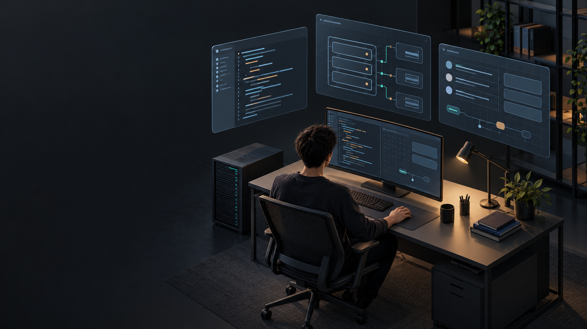
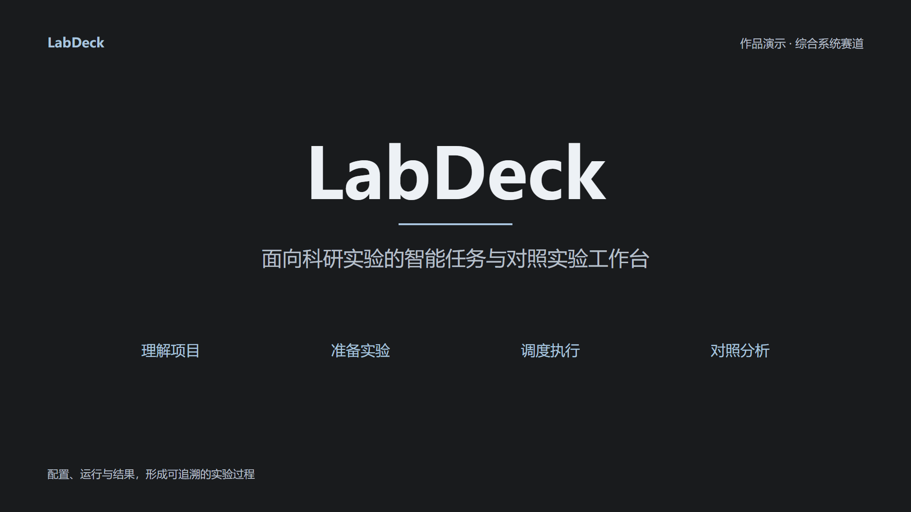
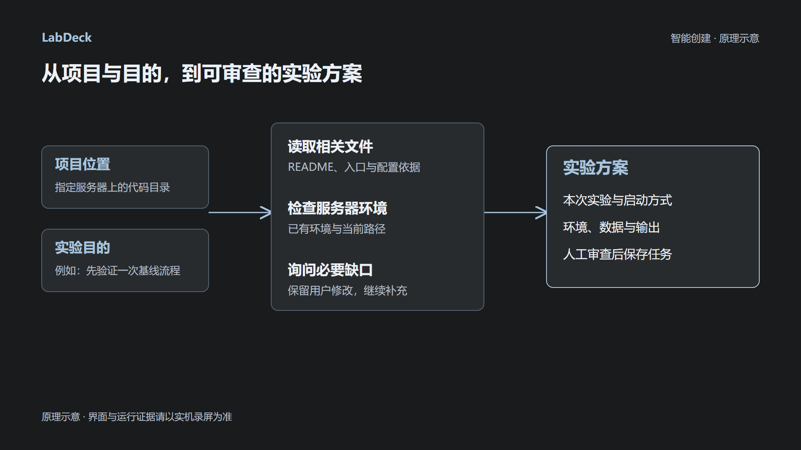
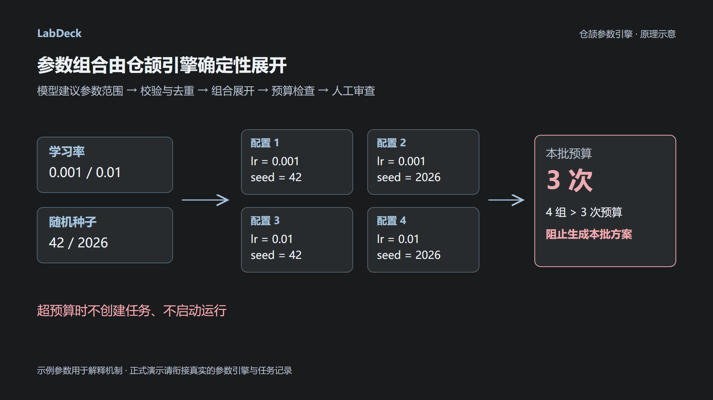
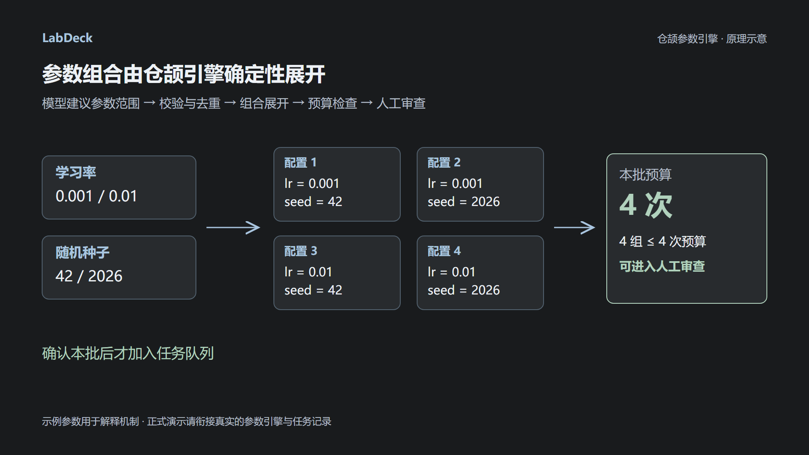

LabDeck · 作品演示视频分镜
五段动画共 53 秒，穿插实机录屏；六分钟、16:9、30fps。此包为参考图与制作方案，尚未生成动画成片。
分散的科研工作
10 秒 · 00:00—00:10
镜头节拍
0—4 秒：看见研究者与分散的文件面板；4—8 秒：缓慢推进，后期依次出现“代码 / 环境 / 实验记录”；8—10 秒：定格并准备切入片头。
旁白
接手一个项目，代码、环境和实验记录往往分散在不同位置。
后期叠字
代码 / 环境 / 实验记录（后期分次出现）
衔接方式
入场：从黑场用 8 帧淡入。
出场：末尾 8 帧整体压暗，切到 A02 的深色片头。无需让模型把面板变形为 Logo。
此段是问题场景示意，不用展示任何虚构软件功能。
展开可复制的图生视频提示词
作品片头
6 秒 · 00:10—00:16
镜头节拍
0—1 秒：灰蓝横线出现；1—2 秒：“LabDeck”淡入；2—4 秒：作品副标题淡入；4—6 秒：保持完整片头。
旁白
LabDeck，将实验准备、任务执行与结果比较串联起来。
后期叠字
LabDeck
面向科研实验的智能任务与对照实验工作台
衔接方式
入场：承接 A01 的炭灰背景。
出场：末尾 8 帧溶解到 R01 实机资源概览。录屏先停稳，再开始操作。
R01：资源总览、服务器连接状态、GPU 和已有环境；提前隐藏个人地址与凭据。
展开可复制的图生视频提示词
智能创建原理
12 秒 · 00:45—00:57
镜头节拍
0—2 秒：“项目位置、实验目的”出现；2—6 秒：依次高亮读取文件、检查环境、询问缺口；6—9 秒：显示实验方案；9—12 秒：突出“人工审查后保存任务”。连线按 SVG 的既定方向绘制。
旁白
给出项目位置和实验目的，系统读取相关文件、检查环境，并生成可审查的方案；缺少的信息继续询问。
后期叠字
项目与目的 → 文件与环境检查 → 可审查方案
人工审查后保存任务
衔接方式
入场：R01 实机录屏停稳后，8 帧溶解进入原理示意；角落保留“原理示意”标记。
出场：末尾突出右侧方案卡片；8 帧溶解到 R02 智能创建页面。进入录屏后先展示项目位置和实验目的，再开始分析。
R02：输入项目和实验目的 → 展示实际文件/行号依据 → 补充数据目录 → 修改并撤销一次 → 审查保存。
展开可复制的图生视频提示词
仓颉参数展开与预算
15 秒 · 02:55—03:10

镜头节拍
0—3 秒：显示两个学习率和两个随机种子；3—6 秒：依次显现四份配置；6—9 秒：预算为 3，显示“阻止生成”；9—12 秒：切换预算为 4，显示“可进入人工审查”；12—15 秒：显示“确认本批后才加入任务队列”。
旁白
模型提出参数建议，仓颉引擎完成校验、去重、组合展开与预算检查。用户审查并确认后，配置才会进入任务队列。
后期叠字
2 个学习率 × 2 个随机种子 = 4 组配置
预算 3：阻止生成 → 预算 4：可进入人工审查
衔接方式
入场：R03 实机任务运行画面结束后，用章节标题“从基线到对照”接入本段；音轨保持连续。
出场：末尾 8 帧溶解到 R04 真实对照实验配置页。再实际操作预算 3 → 4，展示引擎状态与四条命令，然后人工确认。
R04：真实对照实验；展示原生仓颉引擎状态、预算拒绝、配置审查与入队。参数采用演示项目真正支持的值。
展开可复制的图生视频提示词
有依据的实验过程
10 秒 · 05:50—06:00镜头节拍
0—4 秒：回到与开场呼应的科研工作台，面板已有序关联；4—7 秒：后期出现“配置、运行与结果，有据可查”；7—10 秒：显示 LabDeck 与作品副标题，保持到片尾。
旁白
让每次实验的配置、运行与结果都有据可查。LabDeck，面向科研实验的智能工作台。
后期叠字
配置、运行与结果，有据可查
LabDeck · 智能科研实验工作台
衔接方式
入场：R07 工程证据展示结束，8 帧溶解进入结尾场景。
出场：最后 1 秒保持，末尾 10 帧淡出黑场；不添加未经测量的提效百分比。
前接 R07：实际源码、部署说明与测试报告；只展示录制版本实际通过的结果。
展开可复制的图生视频提示词
六分钟剪辑时间线
动画是机制说明，实机提供运行证据。实际训练等待可压缩，并标注时间跳转。
| 编号 | 时间 | 内容 | 制作与录制要点 |
|---|---|---|---|
| A01 | 00:00—00:10 | 分散的科研工作 | 0—4 秒：看见研究者与分散的文件面板；4—8 秒：缓慢推进，后期依次出现“代码 / 环境 / 实验记录”；8—10 秒：定格并准备切入片头。 |
| A02 | 00:10—00:16 | 作品片头 | 0—1 秒：灰蓝横线出现；1—2 秒：“LabDeck”淡入；2—4 秒：作品副标题淡入；4—6 秒：保持完整片头。 |
| R01 | 00:16—00:45 | 实机：资源与环境 | 从任务工作台查看服务器、GPU 与环境；只展示本次实验真正使用的资源。 |
| A03 | 00:45—00:57 | 智能创建原理 | 0—2 秒：“项目位置、实验目的”出现；2—6 秒：依次高亮读取文件、检查环境、询问缺口；6—9 秒：显示实验方案；9—12 秒：突出“人工审查后保存任务”。连线按 SVG 的既定方向绘制。 |
| R02 | 00:57—02:10 | 实机：智能创建 | 项目＋目的 → 实际阅读依据 → 补充目录 → 修改/撤销 → 保存。展开分析时间线约 5 秒。 |
| R03 | 02:10—02:55 | 实机：资源确认与运行 | 选择 GPU、加入队列、展示真实启动命令与日志。长等待可剪掉，时间跳转需标注。 |
| A04 | 02:55—03:10 | 仓颉参数展开与预算 | 0—3 秒：显示两个学习率和两个随机种子；3—6 秒：依次显现四份配置；6—9 秒：预算为 3，显示“阻止生成”；9—12 秒：切换预算为 4，显示“可进入人工审查”；12—15 秒：显示“确认本批后才加入任务队列”。 |
| R04 | 03:10—04:15 | 实机：对照实验 | 显示仓颉引擎实际可用；预算 3 拒绝、4 可生成；审查四组命令后确认入队。参数随真实项目调整。 |
| R05 | 04:15—05:05 | 实机：指标与证据 | 展示配置差异、实际指标、文件来源和口径。训练时间跳转明确标记；不预设指标必须提升。 |
| R06 | 05:05—05:35 | 实机：准备记录恢复 | 恢复一份已完成分析并有人工修改的准备记录，展示配置与时间线保留；不要演成自动重启所有训练。 |
| R07 | 05:35—05:50 | 实机：工程证据 | 源码结构、部署说明和录制版本的实际测试报告。短暂停留，详细材料另附。 |
| A05 | 05:50—06:00 | 有依据的实验过程 | 0—4 秒：回到与开场呼应的科研工作台，面板已有序关联；4—7 秒：后期出现“配置、运行与结果，有据可查”；7—10 秒：显示 LabDeck 与作品副标题，保持到片尾。 |